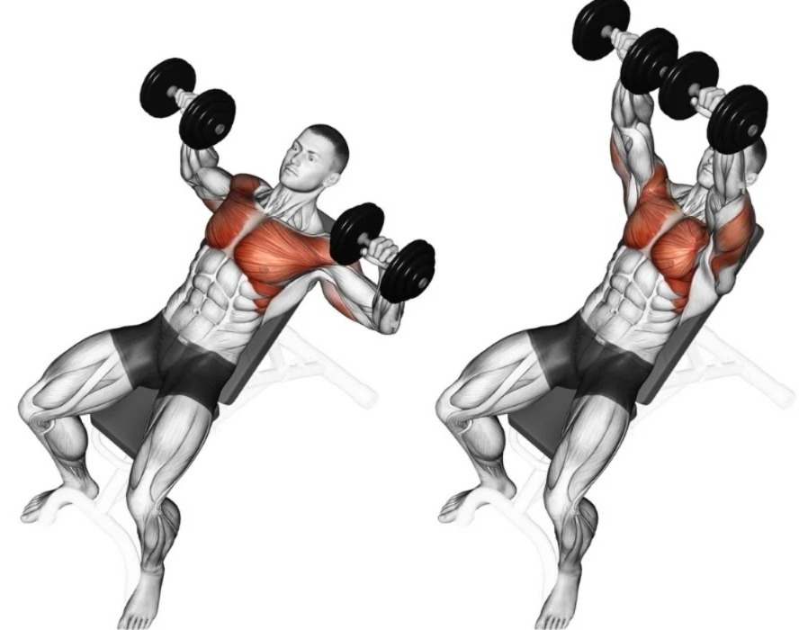
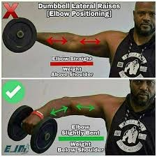
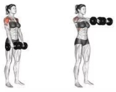
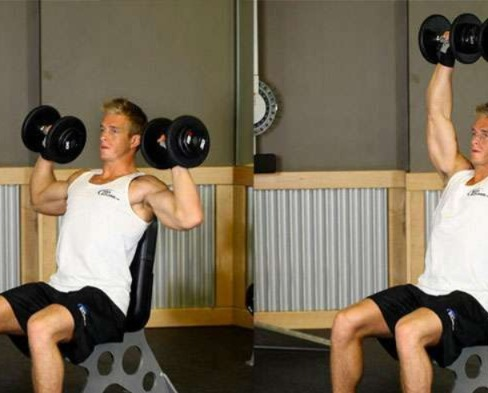
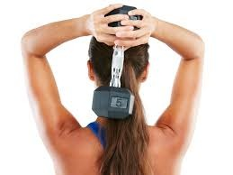
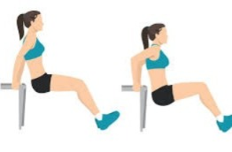

| Exercício | Séries | Repetições | Visualização |
|---|---|---|---|
| Alongamento | - | - | - |
| Supino inclinado | 3 | 10 |  |
| Elevação lateral | 4 | 10 |  |
| Elevação frontal | 3 | 10 |  |
| Desenvolvimento | 3 | 10 |  |
| Tríceps corda | 3 | 10 | |
| Tríceps francês | 3 | 10 |  |
| Tríceps banco | 3 | 12 |  |
| Esteira ou bike | |||
| *Descanso de 1min - 1min20s entre as séries | |||